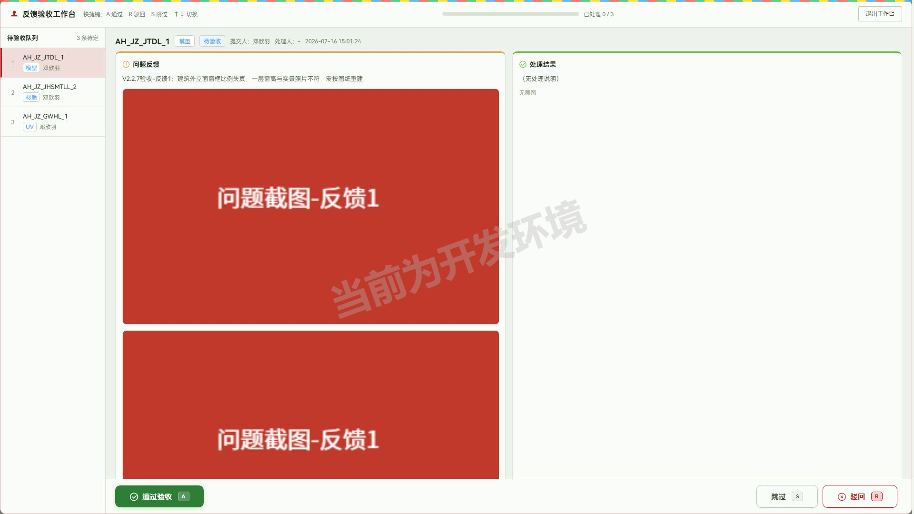

全量回归：14 通过 / 4 失败 / 1 跳过（@write），失败 4 条复跑后稳定失败，逐条核查均为测试数据缺失，非回归 BUG：
| 用例 | 失败根因 |
|---|---|
| v2.2.5 ③ 模型外包自制流程要素 | 测试环境数据库刷新：原测试项目（SJ202607100001）项目记录已消失，#6712 现指向真实项目「广西盛隆冶金项目增补」；发包 #661/#546 仍在但挂在幽灵 sj_num 下，模型外包列表按项目查不到 |
| v2.2.6 ① 我的任务日历备注 | 测试账号本月日历任务被清空 |
| v2.2.6 ② 递交列表提前递交记录 | #6712 的 V2.2.6 验收递交记录随项目重置消失 |
| v2.2.6 ③ 项目概况接口文档链接 | 接口/测试文档链接随项目重置消失 |
v2.2.7发版内容如下： 新增功能 1.模型外包-反馈验收：验收条目太多，验收的流程繁琐，需要反复弹窗、查看。（开发一个沉浸式逐条验收的工作台，最大化减少管理员的操作，重点到问题截图和修复截图） BUG修复： 1.项目需求：在拖动调整列宽后出现了表格排版错位的bug（刷新可以解决，但也容易复现）。 2.需求下任务花费：人员离职后历史完成任务中的人员信息会消失(注意这个测试的时候不能你去操作离职任何人，你看看其他办法进行验证)
对应关系：需求 1 → §1，BUG 1 → §2，BUG 2 → §3
hideSelfMade:true，isSelfMade = self_made_dept_name && self_made_uid）A → 通过验收：进度 1/3，自动切下一条，落库
quality_status=3R →
弹「填写驳回理由」面板：理由必填（空时确认按钮禁用）、0/500
计数、左Ctrl+Enter 提交 · Esc 取消；提交后进度
2/3、自动切下一条S → 跳过：不计入已处理（进度保持
2/3），循环切回已处理条目时操作按钮禁用并提示「该条已处理（通过/驳回），↑↓
切换其它反馈」↑↓ 切换队列条目正常；最后一条 A 通过后进度
3/3、0 条待定GET manage_api/outsource_feedback/get_feedback_list?outsource_package_id=24&quality_status=2&limit=999
工作台全量拉取；POST manage_api/outsource_feedback/update_feedback_status {id, quality_status, remark}
通过=3/驳回=1；⚠️ 两个边界发现见「交付前需人工确认」#1、#2）remark 字段、#522→3
已验收；退出后列表与工作台状态一致）colgroup
逐列宽度全等（含固定列三份渲染）② 表头/表体总宽 2410=2410 ③ 逐列 th
与首行 td 的 x 坐标偏差全部 <1px（0 列错位）④ 固定列与主体逐行 y 坐标
0 错位；刷新后恢复默认布局 2340=2340 仍同步）user/get_user_select_list（在职
385 人） vs get_all=true（全量 676 人）→ 差集 291
人为离职名单assigned_to=463 = 已离职的林智威project_task/get_task_list_by_demand_id：demand_id
非法值/不存在 → 空列表无 5xx；空参 → code 51「请选择需求」）GET manage_api/project_task/get_task_list_by_demand_id?demand_id=47294
返回 assigned_to 人员 id，离职人员 id 仍完整保留）跨功能/附带发现：
| # | 发现 | 证据 | 建议 |
|---|---|---|---|
| 1 | outsource_feedback/get_feedback_list 的
outsource_package_id
传非法值（'abc'）或缺省时返回全库 522
条反馈，参数不校验、过滤失效 |
GET 直调对比：合法 id 返 3 条，'abc'/缺省返 522 条 | 后端补参数必填与类型校验，避免跨发包数据泄漏 |
| 2 | outsource_feedback/update_feedback_status
对不存在的 id（999999）返回 code 0
成功，无存在性校验（quality_status 非法值有校验：code
51「状态值无效」） |
POST 直调 | 后端补记录存在性校验 |
| 3 | 供应商门户（/supplier_portal）为独立账密登录体系，handle_feedback（处理说明/处理截图递交）仅存在于
supplier_api 前缀，管理员 token 调用返回 444 |
前缀探测 manage_api 下 404 | 符合预期的权限隔离，无需修复 |
未覆盖范围声明：
api spec 指针：本轮接口用例已沉淀至
regression/tests/api-v2.2.7.spec.js
| # | 事项 | 建议 |
|---|---|---|
| 1 | ⚠️ get_feedback_list
参数不过滤返全库（接口发现#1） |
转后端补校验；对外发版不提 |
| 2 | ⚠️ update_feedback_status 无 id
存在性校验（接口发现#2） |
转后端补校验；对外发版不提 |
| 3 | ⚠️ 工作台「处理结果」栏带真实供应商处理截图的效果未验（数据无法自造） | 人工用供应商账号处理一条反馈后复核双图对照 |
| 4 | ⚠️ 「验收工作台」按钮在本轮集成浏览器中 locator 点击被 hit-target
判定拦截（报 info-field__label 遮挡），键盘 focus+Enter
正常触发；同页签存在系统性坐标偏移，疑为集成浏览器环境问题而非页面
BUG |
人工在真实浏览器点一次该按钮确认可点；低风险 |
| 5 | 测试环境数据库已刷新：原测试项目（SJ202607100001）项目记录消失、#6712 易主为真实项目「广西盛隆冶金项目增补」，回归 spec 多条数据前置失效 |
| 数据 | 位置 | 状态 |
|---|---|---|
| 反馈 #520（模型，AH_JZ_JTDL_1，2 张截图） | 发包「皖江江南建筑模型发包（#24）」（项目 SJ202501130001） | 已验收（quality_status=3） |
| 反馈 #521（材质，AH_JZ_JHSMTLL_2，1 张截图） | 同上 | 修改中（驳回，理由存 remark：「V2.2.7验收-驳回测试：材质修复后仍有反光…」） |
| 反馈 #522（UV，AH_JZ_GWHL_1，1 张截图） | 同上 | 已验收（quality_status=3） |
| 上传截图 4 张（v227-fb1.png ×2 / fb2 / fb3） | /storage/project_bug/202607/ | 保留 |
注：#24 为真实项目发包，反馈内容均带「V2.2.7验收」前缀便于识别；测试环境不清理。
强度中等，新增模型外包反馈验收工作台，修复已知问题。
需关注人员：DTA、PM
1.「模型外包-反馈验收工作台」：（提升批量反馈验收效率，减少管理员逐条弹窗操作） 支持在发包详情反馈管理中一键进入沉浸式验收工作台，逐条聚焦问题截图与处理结果对比； 提供 A 通过 / R 驳回 / S 跳过 / ↑↓ 切换快捷键与可视化验收进度条，驳回时可填写理由供供应商针对性修改； 方便 DTA 管理员集中处理大批量反馈验收工作；

需关注人员：全员
1.修复了「项目-项目需求」拖动调整列宽后表格排版错位的问题； 2.修复了「项目-项目需求」需求任务列表中人员离职后历史完成任务的人员信息不显示的问题；